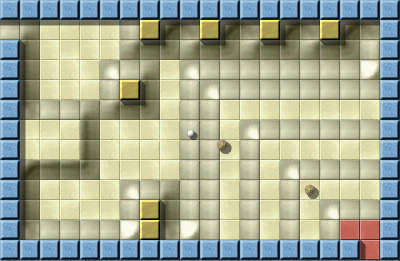
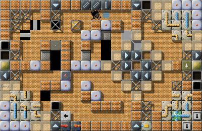
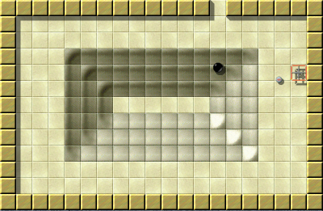
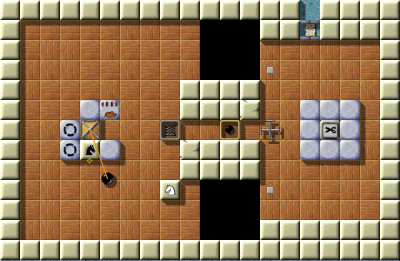

Comments of our VisitorsWe gave you the possibility to state comments and remarks for us at the end of the poll, and we were very happy to receive your hortative greetings, we really need this kind of feedback, and so we want to cite an excerpt of the comments here (some translated):
Thank you! :-)
And here they are: Best Meditation 2008: “Mountain Climbing” by Joseph Dunne Mountain Climbing, VII/22 After being awarded Funniest Level 2007, “Mountain Climbing”, Joseph Dunne's exceptionally unique creation gathers one more award: It was chosen Best Meditation 2008, with 3.85 of 5 possible points way ahead of “Cold Meditation” (3.59) and “Meditation Puzzle” (3.56).
Best Action Level 2008: “Diving” by Joona Laire
Diving, VII/2
“Diving” deserves a special mentioning here: During the evaluation of this year's poll, there were times when “Diving” was in leading position in three categories at once (and would have won them, if it were for points and not averaged points), and it was already chosen second funniest level in 2007! I'm personally glad that this extraordinary level finally made it to become Best Action Level 2008, as Joona Laire more than deserved it, with 3.61 points ahead of “Phaeton” (3.48) and “A Cooler Spot In Hell” (3.39).
Best Onescreener 2008: “Industrial Puzzles” by Raoul Bourquin Industrial Puzzles, VI/98 “Industrial Puzzles” was the first onescreener to become Level of the Month, this was just two months ago. Now it consequentially reached for the Best Onescreener 2008 award, and with the highest overall rating throughout this EoYA, with 4.18 points, Raoul Bourquin marks his territory against “Plan Ahead” (3.71) and “What a Mess” (3.65).
Best Design 2008: “Temple of Gold” by Jacob Scott Temple of Gold, VII/24 Jacob Scott's “Temple of Gold”, Level of the Month December 2007, undoubtedly one of the best levels in Enigma, is this year's awardee in the category “Best Design”, and gathered for this victory 4.04 points. It is followed by the Level of the Year 2007 “Island Labyrinth” (3.79), and the already mentioned “Diving” (3.61).
Funniest Levels 2008: “What's the Problem?” by Sven Siggelkow
What's the Problem?, IV/49
Sven Siggelkow's “What's the Problem?”, one of the most surprising levels in Enigma, is awarded the rank of Funniest Level 2008! With 3.39 points it outsmarts “Pac Marble” (3.33) and even “Diving” (3.31). The player says: This is definitely merited!
And now, to the most important category: Level of the Year 2008: “Houdini” by Ronald Lamprecht! Houdini, VI/74 To the end of 2008, only four levels overcame the rating-9-watershed: “Houdini”, which concluded with 9.36 points, “Island Labyrinth” and “Temple of Gold”, which share the second place at 9.27 points, and “Quadropolis”, the First Common Efforts Level, reaching 9.17 points—these are the levels which consitute the Crème de la Crème of Enigma, and “Houdini” was rated the best of them in 2008—and hence, its author, Ronald Lamprecht, to be the Level Author of the Year! Jacob Scott, holding this coveted title up to now, wrote us his thoughts about this fantastic piece of craftwork:
Ah Houdini … I remember this level well. Most puzzles in Enigma
require a bit of cleverness to solve, but some puzzles like this not
only require cleverness but creativity—to solve as well as to make.
It creates its own distinct environment with non-obvious goals. The
name “Houdini” very aptly describes this puzzle. Just as in Houdini's
tricks of freeing himself from many restraints placed on him at once,
progressing through this level requires repeatedly escaping from some
area to find oneself trapped by yet another barrier. And this makes
it a constant challenge, and hence delight, to play.
I think one large feature that distinguishes the most enjoyable,
higher-rated levels of Enigma, like this one, is the necessity to
explore and experiment. This was definitely present in the last Level
of the Year, my Island Labyrinth, with grassy corridors leading off to
various smaller puzzles. But this also holds for this year's Level of
the Year; instead of exploration over a vast landscape, solving this
puzzle really requires the exploration of all interactions between the
given items. It may be small, only a couple rooms, but the potential
number of different approaches is huge. In fact I believe this to be
true of many of the winning levels this year; each one presents the
player with many different options, either for where to go or how to
use certain elements, and presents some complex problem that can't
even obviously be solved using the given pieces, let alone in which
configuration, but can be passed with a bit of ingenuity. This is
distinct from puzzles which just necessitate setting up pieces in
particular ways, using them in the expected manner—say a blocks and
water puzzle or a laser and mirrors puzzle. While fun, these cannot
compete with that one quality of the Levels of the Year, a sense of
exploration.
This Level of the Year goes to a great level author who has produced
many quality landscapes over the years. Most of his levels are based
around some unique concept or pattern that nobody has seen before—as a
result they often appear nearly impossible until the key is found
and, elegantly, the puzzle all falls apart. The Level of the Year
2008 is one of these levels that embody the spirit of exploration and
innovation, which is what makes it so rewarding to finally solve.
You may want to reread the article about “Houdini” here. Coming to the end …With these words, we close our second Level-of-the-Month series, and just as last year, it's time for us to thank all those commentators and authors who helped us throughout the last year, thanks go to Ryujun, Daydreamer, Ronald Lamprecht, Manuel König, Tarim, Craven, Taztunes, Shoki, Mecke, JuSt, dev0, Moneymaker, Mark P., Brynn, Dominik Leipold, Martin, and Xang for their comments. Particular thanks go to Ludmian Sedai, who wrote the fantastic article about moonpearl's “Gods of Enigma II”, to NObby for one article or the other ;-) ; as well as to Clifford J. Tasner, who, although busy with the by far more important elections for You-Know-Whom, always found some time for us, to proofread our English, and to provide us with comments. Large thank-yous go to Yurij and Ludmian, who translated the immense load of articles this homepage produces into Russian. Our thanks go to Alain Busser for his wonderful article about “Patterns of Impulse”, and to Mecke, who provided us with articles for the new “Marbleous!” column — of course, we'll continue them this year. Of course we want to thank the authors of the nine excellent levels as well: Raoul Bourquin, Sven Siggelkow, Ronald Lamprecht, Jacob Scott, Jon 'WB' Sneyers, Moonpearl, and Lukas Schüller, without whose levels there would be no Level-of-the-Month at all; thank you for your continuing work, and thanks to all the other level authors as well! Just as Daniel Heck said:
It's really the levels that reward us, and not the other way around.
Thanks go to Daniel Heck, to Meinolf Schneider, and to the current developers of Enigma, particularly Ronald Lamprecht and Raoul Bourquin. There's no need to explicate their contributions, we all know their names, and that without their hard work in past and present, Enigma wouldn't exist and thrive the way it does today. You can find the current statistics of our nineteen LotM's in the LotM-archive, and the exact statistical results of the poll you can find here. Cheers, |